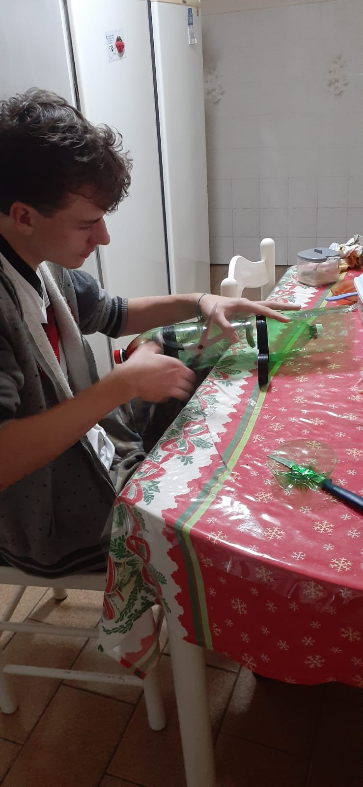
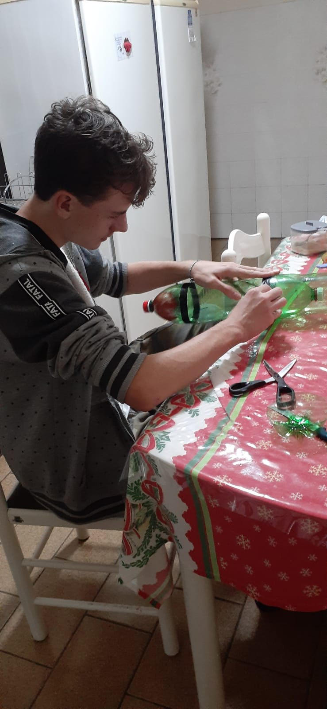
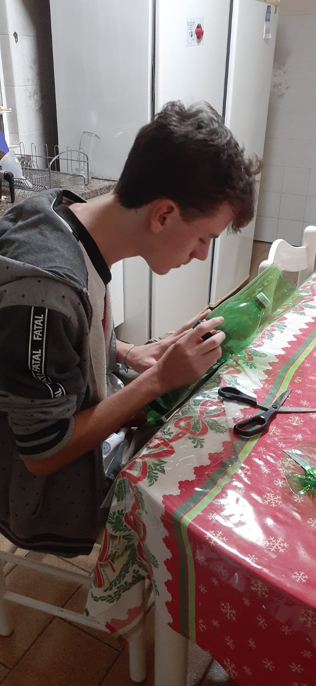

Construção
Para a construção do foguete, utilizamos apenas uma garrafa pet, uma bexiga (para pôr os compostos químicos dentro) e um funil feito de papel na ponta da garrafa. Para a base, utilizamos um cano de PVC (aproximadamente 1 metro), cano largo (servia como gatilho), fita isolante, cola instantânea, presilhas (seguravam o foguete na base), uma braçadeira (segurava as presilhas), e um prego (para furar a bexiga).
  Fotos de Gabriel G.